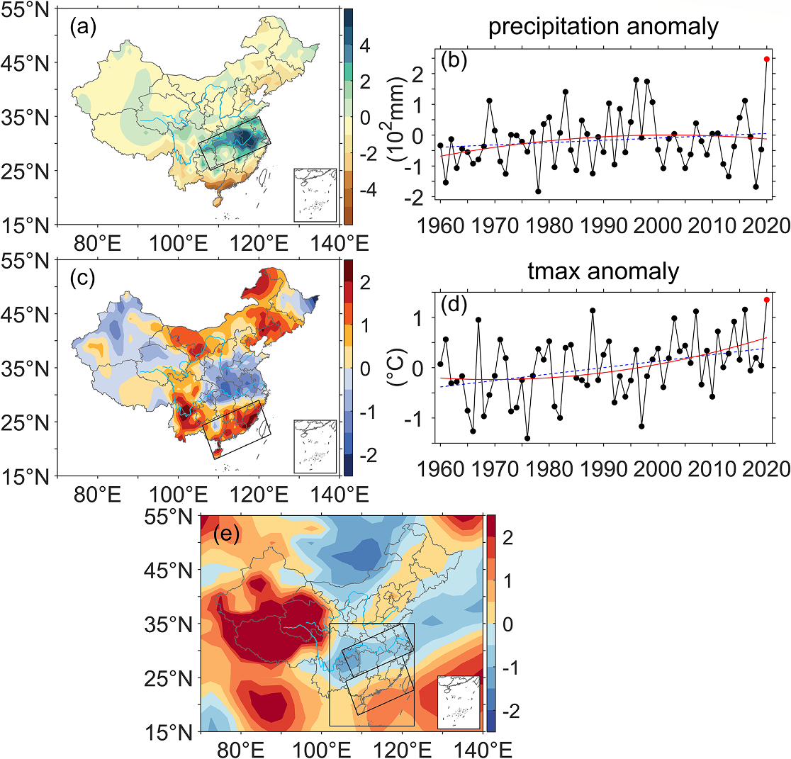
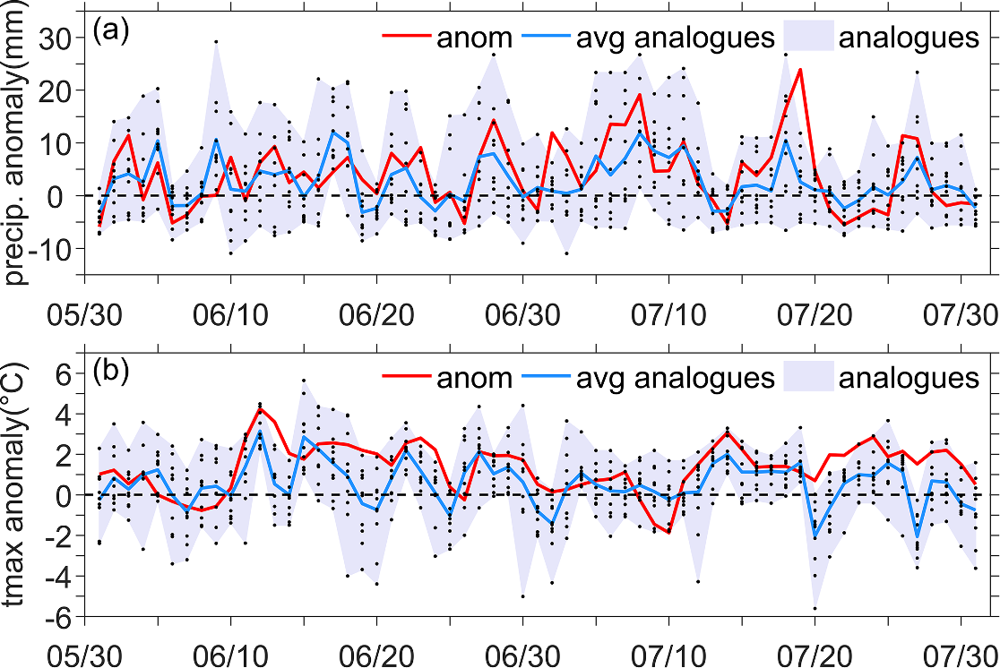
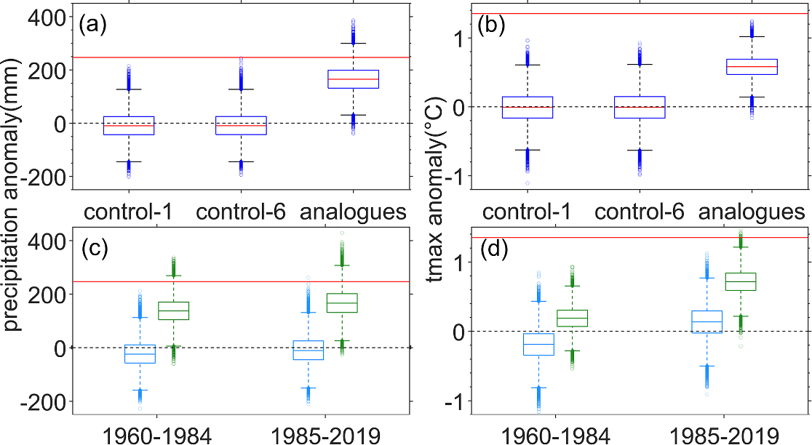
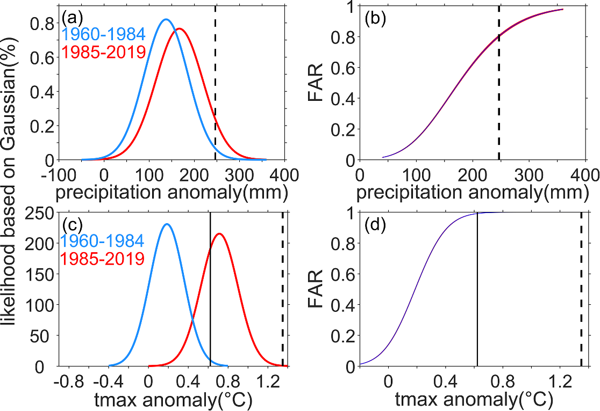

Research Highlights · Conditional attribution
One circulation pattern: why heavy rain here and heat there?
Overview
During the 2020 Meiyu season in China, the middle and lower reaches of the Yangtze River saw relentless rain while South China endured persistent heat. These very different extremes were associated with the same large-scale circulation pattern. We wanted to understand how much the atmospheric circulation itself could explain, and what a changing climate background would mean for similar weather patterns.
Circulation explained about 71% of the rainfall anomaly, but only 44% of the heat anomaly. In a warmer climate, similar circulation made both types of extreme more likely, especially heat.
Background
During the 2020 Meiyu season, the middle and lower Yangtze River experienced its heaviest Meiyu rainfall since 1960. The season lasted 62 days, China issued rainstorm warnings for 41 consecutive days, and severe flooding followed. Meanwhile, South China faced persistent heat and widespread drought, with the city of Haikou recording 44 hot days. In the same summer, neighboring regions faced very different conditions: rain that would not let up in one, and unusually persistent heat in the other.
These seemingly different extremes were influenced by the same large-scale circulation: the western Pacific subtropical high was unusually strong and extended westward. An anomalous cyclone and moisture convergence on its northwestern flank favored rainfall over the Yangtze region, while South China experienced heat beneath the high. That led us to ask how much this pattern could explain. If we held the weather pattern as similar as possible, would the present climate background still make the extremes stronger?
To explore these questions, we used conditional attribution, comparing rainfall and heat while keeping the weather patterns as similar as possible. Earlier work often examined one extreme in one region, or several hazards within the same region; here, we considered two different hazards occurring together in neighboring regions. Viewed as a spatially compound event, the two hazards are naturally connected. This paper, however, still attributed rainfall and heat separately rather than assessing their joint occurrence.

Methods
To isolate the role of circulation, we used flow analogues. The idea is straightforward: search the historical record for days with sea-level-pressure patterns resembling those in 2020, then look at how much it rained and how hot it became on those days. This lets us ask: what weather would we usually expect with a similar circulation pattern? We did not rely on a handful of matching days. We also allowed for weather patterns lasting several days and for the way historical days were selected to affect the result. Control experiments and repeated selections from the historical record gave us a range of possible weather outcomes.
We first removed the slow changes over time to estimate how much circulation itself could explain. We then kept those long-term changes in rainfall and temperature and compared similar weather patterns from two periods: 1960–1984, called the “past climate,” and 1985–2019, called the “present climate.” Throughout this article, “past” and “present” refer to these two periods.
Results
Looking at the daily changes, the analogues followed quite a few of the observed ups and downs. They captured some heavy-rain episodes and part of the temperature evolution. But they could not reproduce the full severity of 2020. In South China especially, observed maximum temperatures were above the analogue average on most days. Similar weather patterns did not always mean equally extreme weather.

The difference became clearer when we calculated the share explained by circulation: about 70.7% of the rainfall anomaly over the middle and lower Yangtze, but only 43.6% of the heat anomaly in South China. The exceptional Meiyu rainfall was closely tied to the cyclone–subtropical-high configuration. For heat, however, the same large-scale circulation left more than half of the anomaly unexplained.
Why did the same method explain less of the heat? Maximum temperatures in South China had already been rising over the long term, so a similar weather pattern need not bring the same temperature in different periods. The method also did not separately calculate how factors such as wetter or drier soils affected temperature, even though they may have helped the heat develop and persist. We therefore cannot simply assign everything left unexplained to climate change.

The next step gets to the heart of conditional attribution: if the weather pattern is much the same, is rain this heavy or heat this intense more likely now than before? Under similar circulation, the chance of reaching or exceeding the 2020 rainfall amount rose from about 1.23% to 6.25%, around 5.1 times the past probability. The corresponding fraction of attributable risk (FAR) was about 0.80. Even with a similar weather pattern, the warmer climate background made such extreme rainfall more likely.
When comparing heat, we ran into a problem: none of the past-climate samples reached the observed 2020 temperature anomaly. Setting the comparison threshold at that value would leave us with no past samples above it. We instead used one standard deviation (+0.62°C) as a common threshold. The chance of exceeding it rose from approximately 0.58% to 68.7%, with FAR around 0.99. A level of heat that was once rare had become quite common in the warmer climate under similar circulation. These probabilities refer to the 1σ threshold, not to the actual intensity reached in 2020.
As we raised the threshold across the range examined, FAR increased for both hazards, especially heat. Here, FAR concerns how much of the occurrence risk is associated with the climate difference between the two periods. It does not tell us what share of an individual event’s intensity was caused by climate change.

Discussion
At this point, it is natural to wonder whether all of these changes can be attributed to human activity. This study cannot take that final step. The two historical periods may differ because of external influences such as greenhouse gases, but also because of the climate system’s own longer-term ups and downs. To separate the human contribution, we need further evidence from climate-model comparisons of worlds with and without human influence. The paper left that question open for later work.
But it addressed a practical question first: when an extreme is strongly shaped by unusual circulation, can we separate the weather pattern from the changing climate around it? The two events in 2020 show why that distinction matters. Saying that the subtropical high caused everything overlooks the background change. Looking only at long-term trends, on the other hand, does not explain why both regions experienced extremes together in that particular summer.
We later developed constructed-flow-analogue methods to combine historical weather patterns into a closer match to the event. We also brought together storyline methods, which explain an individual event, and probability-based methods, which assess changes in the risk of similar events. The pairing of Yangtze rainfall and South China heat also suggested a next question. If the hazards can occur together, can we directly study their joint risk and how human influence changes it?
Large-scale circulation helps explain why an event happens at a particular time and place, while the changing climate background affects how extreme the outcome can be under similar weather patterns. Considering both helps us understand the event in front of us and the risks ahead.
Behind the scenes
This was my first paper as a graduate student, and the beginning of my research career. I started planning the study in the autumn of my first year, fitting coding and data processing around classes before moving on to the figures and writing. The day it was accepted felt incredibly rewarding. Somehow, that exact feeling has become harder to recapture since then.
One of the reviewers was color-blind, which made me realize that a figure’s colors need to do more than look good: the information they convey needs to be clear and easy to distinguish for readers with different color vision.